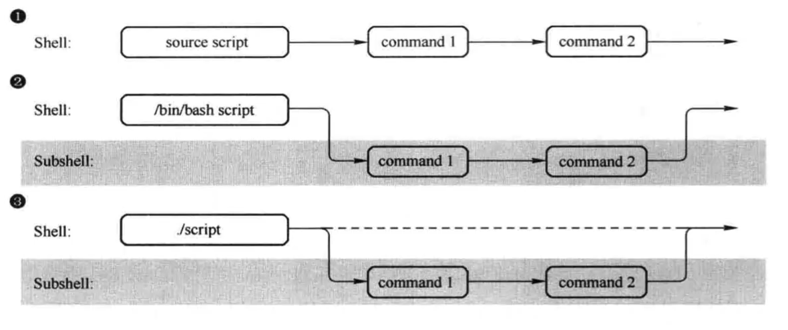
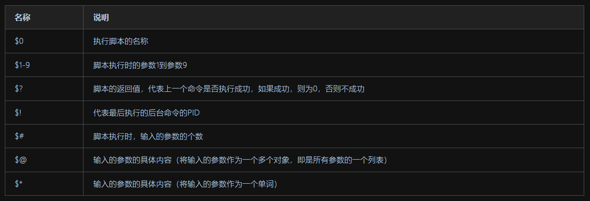

Shell
Shell
概念
Shell
解释执行用户输入的命令或程序等，交互式
Shell是一块包裹着系统核心的壳，处于操作系统的最外层，与用户直接对话，把用户的输入解释给操作系统，然后处理操作系统的输出结果，输出到屏幕给与用户看到结果
Shell脚本
命令或程序写在文件中，执行文件读取代码，这样的程序文件称为Shell脚本，非交互式
Windows中存在
*.bat批处理脚本，Linux中常用*.sh脚本文件
Shebang
指的是文件开头的两个字符#! ，后跟解释器名称
①以#!/bin/sh开头的文件调用的是bash解释器
②以#!/usr/bin/python开头的文件调用的是python解释器
③以#!/usr/bin/env 解释器名开头的文件调用的是指定解释器
④若文件未指明Shebang，脚本执行的时候默认是当前Shell作为解释器，可以通过echo $SHELL指令查看
执行Shell脚本的方式
①文件无x权限或脚本未指定Shebang时，使用解释器名 script.sh，提权chmod +x script.sh
②文件有x权限可以使用绝对/相对路径
③source script.sh或. script.sh
④利用重定向写入符号解释器名 < script.sh，这个命令会运行script.sh脚本，并将其内容作为输入传递给Shell解释器

Bash特性
①文件路径tab键补全
②命令补全
③快捷键 ctrl + a，e，u，k，l
④通配符
⑤history
echo $HISTFILE查看历史命令
! 历史id快速执行历史命令
!!调用上一条命令
Shell语言
变量
定义
Shell脚本语言是一种弱类型语言，无需声明变量类型，默认字符串；标识符规则与C类似
赋值
Shell变量赋值不得有空格，会被识别为命令+参数等；单引号强引用，不识别特殊符号，双引号识别，反引号括起来的返回的是命令执行结果，相当于$()
查值
echo $变量名或echo ${变量名}
作用域
普通变量作用域是当前Shell（pstree查看进程树），切换Shell变量会丢失
每次调用解释器执行脚本都会开启一个子Shell，完毕后回到父Shell中，因此脚本中变量的定义赋值不会被保留；若采用source或.的方式执行脚本会在当前Shell执行
环境变量
配置文件
用户个人：~/.bash_profile、~/.bashrc，是远程登陆用户特有文件
全局配置文件：/etc/profile、/etc/bashrc
以个人配置文件优先加载变量
检查系统环境变量的命令
set输出当前Shell所有变量，包括全局变量与局部变量（sh脚本中定义的变量），declare相同
env显示全局变量，export显示环境变量
撤销环境变量
unset删除变量或函数
设置只读变量
readonly当前Shell结束只读变量失效
环境变量文件加载顺序
/etc/profile ->
/etc/profile.d目录下的脚本 ->
~/.bash_profile -> ~/.bashrc ->
/etc/bashrc
特殊变量

补充
$$ 当前Shell脚本的进程号
$_ 取得上次执行命令的最后一个参数
基础内置命令（Bash）
echo
1 | -n 不换行输出 |
eval
执行多个命令，分号隔开
exec
不创建子进程执行后续命令，执行完毕后exit
父子Shell
父Shell的PID是子Shell的PPID
ps进程管理命令
1 | ps -ef |
每次调用解释器都会开启一个子Shell，exit可以退出回到父Shell中
进程列表
用()括起来的命令会作为一个进程列表，创建子Shell，()可以嵌套
用子Shell进行多进程处理，可以提高并发执行效率
内置/外置命令
外置命令运行更慢，并且会开启子进程执行；type命令判断命令为内置/外置，compgen -b列出内置命令
![WP-[2025.1西湖论剑]matrixRSA](/2025/02/03/2025%E8%A5%BF%E6%B9%96%E8%AE%BA%E5%89%91-matrixRSA/cover.jpg)
![WP-[2025.1软件系统安全赛]happylock](/2025/01/14/2025%E8%BD%AF%E4%BB%B6%E7%B3%BB%E7%BB%9F%E5%AE%89%E5%85%A8%E8%B5%9B-happylock/cover.jpg)
![WP-[2025.1软件系统安全赛]donntyousee](/2025/01/10/2025%E8%BD%AF%E4%BB%B6%E7%B3%BB%E7%BB%9F%E5%AE%89%E5%85%A8%E8%B5%9B-donntyousee/cover.jpg)
![WP-[2024.12CISCN初赛]fffffhash](/2024/12/22/2025CISCN%E5%88%9D%E8%B5%9B-fffffhash/cover.jpg)